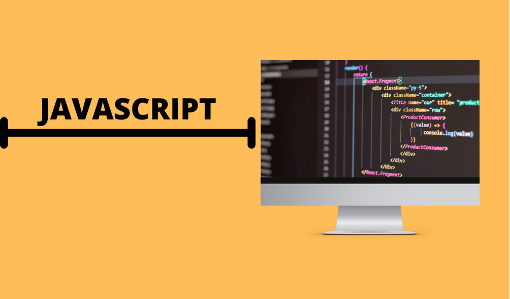
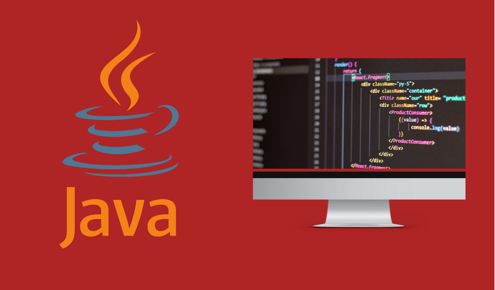

As melhores linguagens para quem vai começar a programar
Quem começa um curso de desenvolvimento de software muitas vezes tem como objetivo aprender algum código que o torne um profissional visado no mercado. Mas a verdade é que todas as linguagens podem levar a isso, mas nem todas são recomendadas para quem está iniciando . Existe muitas linguagens e é muito facil nos perdemos ou começarmos errado , com essa lista você podera achar a melhor forma de iniciar no mundo da programação.

As melhores linguagens de programação para iniciantes
o JavaScript continuará sendo uma das linguagens mais procuradas e populares do mercado, principalmente pela leveza de processamento de aplicações desenvolvidas com ele. Alem disso ele é de simples entendimento.Sempre se recomenda iniciar por essa linguagem pois com ela se tem uma base para entendimento das proximas A maior vantagem do JavaScript é a capacidade de suportar todos os navegadores modernos e produzir um resultado equivalente. As empresas globais apóiam o desenvolvimento da comunidade criando projetos importantes.
O Java é uma linguagem de programação orientada a objetos e é uma das linguagens mais utilizadas pelas empresas na atualidade no desenvolvimento de aplicações WEB e Mobile.Vocês já devem ter escutado muita gente falando que o Java é uma linguagem complexa, porém não é bem assim. O Java possui regras muito bem definidas que facilitam bastante no desenvolvimento de software. Muita gente acaba pór desistir, poque não entende a orientação a objetos mas depois que você supera isso, tudo se torna mais facil. O importante é estudar e praticar sempre que possível para que você consiga fixar bem o conhecimento.
